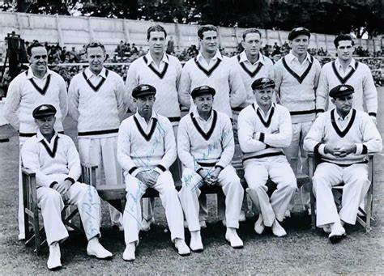
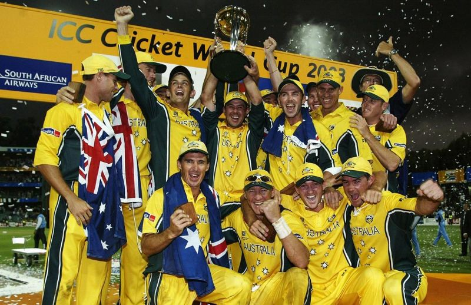
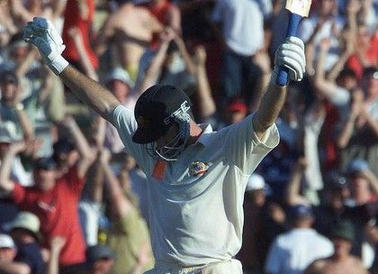

Strive, Thrive, Win
Where Passion Meets the Pitch
The Australian cricket team, known for their fierce competitiveness, has a rich history of success in international matches and tournaments.
Matches
News
Big Bash
Cricket Lessons
Our Partners
Matches
News
Big Bash
Cricket Lessons
Our Partners
ABOUT US
The Australian cricket team, renowned for its storied legacy and unwavering commitment to excellence, stands as a global powerhouse in the sport. Comprising elite athletes, each player brings unique skills to the field, united by a shared passion for cricket. With a history of World Cup triumphs and Ashes dominance, their achievements are a testament to their dedication.

Secure your tickets, share the excitement, be part of cricket history !
HURRY UP !
Gear up for an unforgettable cricketing experience! Don't miss the chance to witness thrilling matches live in Australia. Secure your tickets now to be a part of the action, feel the electric atmosphere, and support your favorite team. Whether it's a Test, ODI, or T20 match, be there to cheer on the players and create lasting memories. Hurry, limited seats available! Purchase your tickets today and be a part of cricketing history.
BUY TICKET

"The mark of a great team is how they react in defeat. And I've been very impressed with the Australians in defeat. They always bounce back. They always come back and try and win the next one."

THE KANGAROOS
The Invincible
Cricket World Cup Dominance
Steve Waugh's Final Ball Century
© 2023 Cricket Australia. All rights reserved.
cricket.com.au is a production of CA Digital Media – a division of Cricket Australia.